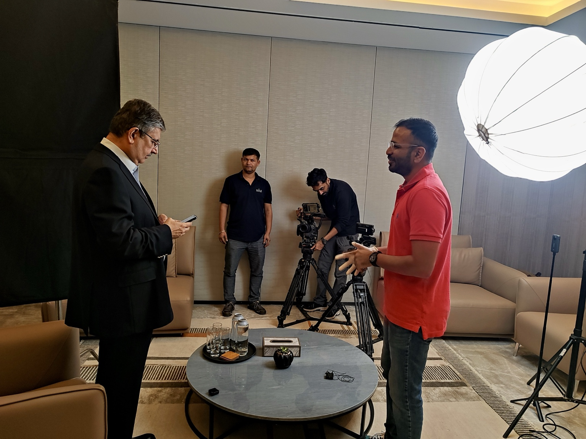
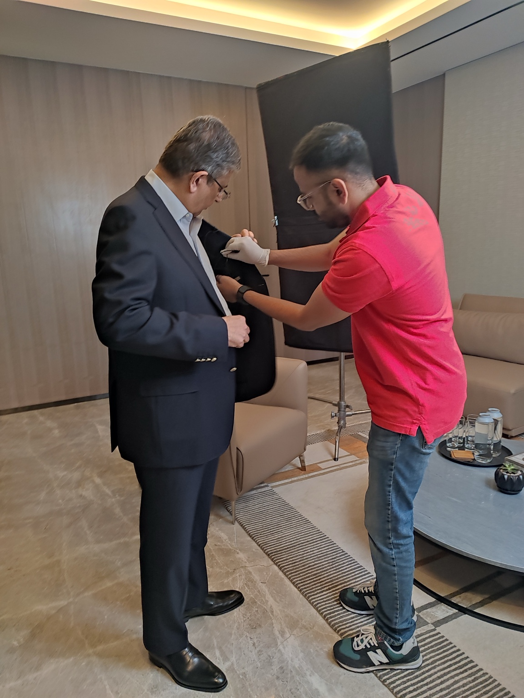

S&P Global.
A corporate film produced and shot for S&P Global, built around people, ideas and the conversations at the centre of the story.

Making the corporate conversation visual.
The production centred on an interview-led corporate film, with the camera and lighting designed to create a considered, cinematic setting for the conversation.
The work moved between the finished interview setup and the practical details behind it — cameras, lighting, direction and the people working together to shape the final frame.

Behind the polished frame.
Corporate films often look effortless on screen. Behind that simplicity is a careful process of positioning, lighting, camera movement and collaboration.
These photographs capture the production from that side of the lens — from the interview setup to the final adjustments before rolling.


“The finished frame is only part of the story. The production is where the visual language begins.”